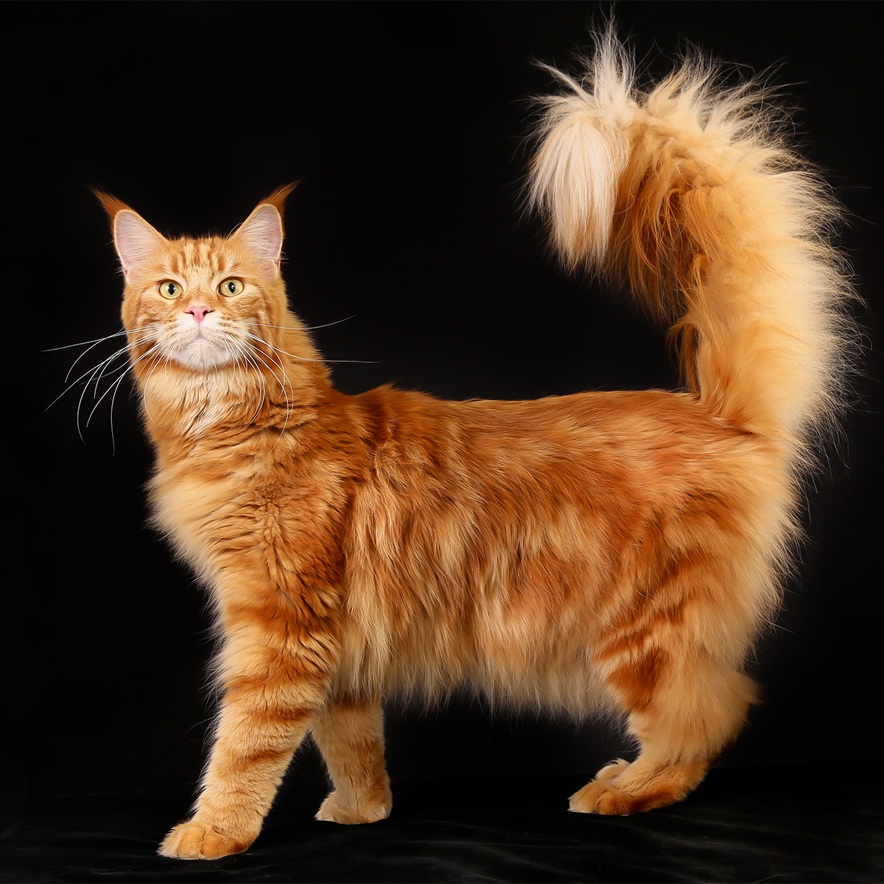

Ik houd van katten!
Katten enorm liefe beesten en huisdieren. In dit "blog" zal ik vertellen waarom katten geweldige huisdieren zijn!
Een button wordt in de default state getoond als er niet mee geïnteracteerd wordt, en als hij niet disabled is.
Katten enorm liefe beesten en huisdieren. In dit "blog" zal ik vertellen waarom katten geweldige huisdieren zijn!

Katten zijn goed in knuffelen De meeste katten zijn dol op aandacht. Vooral als jouw schoot de warmste plek in het huis is, zullen ze niet van je zijde wijken. Dit is ook een goed excuus voor jezelf om een beetje rustig aan te doen, want het is een ongeschreven regel dat je niet mag opstaan, wanneer er een kat op je schoot ligt. Het is dan dus tijd voor een rustig avondje bankhangen.
Het is geen probleem dat je kat graag bij je op schoot klimt, want in tegenstelling tot sommige hondenpootjes, zijn die kleine, schattige kattenpootjes altijd schoon. Vooral kortharige katte vereisen maar weinig verzorging; een regelmatige borstelbeurt tijdens de rui is voldoende. Je zult geen modderpootjes op je pas gedweilde vloer vinden en ook je kleding blijft relatief ongehavend. Je zult wel een roller moeten kopen om alle kattenharen van je outfit te verwijderen, voor je de deur uitgaat.
Katten vragen minder aandacht dan honden. Ze zullen zich prima zelf vermaken en zich niet snel vervelen. Geef ze een paar simpele dingen zoals een kartonnen doos, propjes papier of zet ze voor een raam waar ze vogels kunnen spotten. Toch is het voor het welzijn van de kat beter als je ze mentaal en fysiek te stimuleren met uitdagend speelgoed, krabpalen en interactieve spelletjes. Het helpt natuurlijk als je daarnaast zelf regelmatig wat tijd vrij weet te maken om samen te spelen en zo de band te versterken.
De meeste katten zullen het fijn vinden als je regelmatig thuis bent, maar als je het een keer wat drukker hebt, zullen ze niet meteen gaan klagen. Je hoeft ze niet uit te laten en ze zullen ook niet de hele buurt bij elkaar blaffen, wanneer je te lang wegblijft. Zorg dat de kattenbak schoon is, de voer- en waterbak gevuld is en de krabpaal binnen bereik en je kat is voorlopig tevreden. Als katten diarree hebben dan kan dat een teken zijn dat ze pijn hebben of ziek zijn.
Net als honden, komen ook katten voor in allerlei soorten, maten en kleuren. Van zwart tot wit, van grijs tot rood, alles is mogelijk. Je kunt dus voor een kattenras kiezen dat je er leuk uit vindt zien, maar nog belangrijker: je kunt kiezen voor een ras dat bij je past. Het ene ras is speelser dan het andere en sommige katten zullen juist weer graag de hele dag op je schoot vertoeven. Je hebt dus de kans om voor een kat te kiezen die zich snel kan aanpassen aan jouw situatie. Bedenk wel dat sommige kattenrassen een flinke duit kosten. Misschien zul je wat moeten sparen of is geld lenen een optie. Er zijn rassen, waarbij je gemakkelijk meer €1000,- kwijt bent aan een schattige kitten.